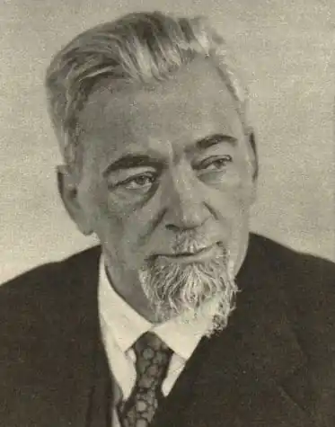

Кость Сроко́вський (6 лютого 1878, Львів — 19 червня 1935, Трускавець) — польський публіцист, політичний діяч ліберально-демократичного напряму українського походження.
Життєпис
Працював співредактором низки польських газет у Львові, Петербурзі й Кракові. З 1913 року посол до Галицького сейму. Замолоду писав українською мовою в "ЛНВ", у 1901 р. з'явилися його "Оповідання" (видання Українсько-Руської Видавничої Спілки). Серед його праць зокрема: "W stolicy białego cara" (1904), "Upadek imperializmu Austrii" (1913), "Sprawa narodowościowa na kresach wschodnich" (1924) з критичним наставленням до польської національної політики на північно-західних українських і білоруських землях у тодішній Польщі.